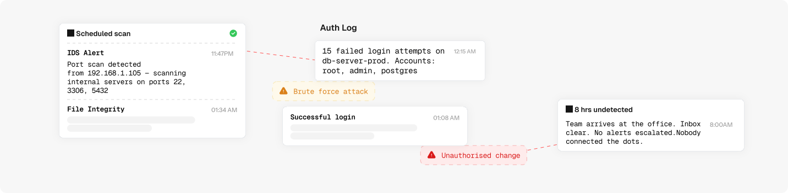

Your infrastructure is under attack right now. Do you know?
Enginsight gives you continuous visibility, detecting threats as they happen, correlating events automatically, and responding 24/7 when it matters.

Unauthenticated remote code execution on Port 8443. Patch management policy triggered and remediation workflow initiated.

The gap between having security tools and having security visibility
You probably already have firewalls, endpoint agents and a scanner. The real question is: when something goes wrong tonight, will you know?

Continuous threat detection — not quarterly snapshots.
Core monitors your entire infrastructure 24/7, detects attacks in real time, and shows you every day: are we getting better or worse?
Three isolated alerts become one critical attack chain.
Your tools generate hundreds of events a week. Nobody connects them. SIEM correlates automatically — turning noise into a single, actionable incident with full context.
Ransomware hits at 2am. Our SOC is already there.
Without MDR: alert fires at 23:47, someone notices at 8am, investigation starts at 9:30. 11 hours of uncontrolled breach. With MDR: SOC evaluates at 23:52, system isolated at 23:58.
↑ from 420 last scan
Find what attackers find — before they act on it.
Automated and expert-led penetration testing for web apps, APIs, and network perimeter. OWASP Top 10 covered. Results in 48–72 hours. NIS2-ready report included.
See every attack,
everywhere, all at once.
Enginsight correlates events across your entire infrastructure — servers, endpoints, firewalls, OT networks — and shows you real attack chains, not isolated data points.
Where do you start?
It depends on where you are.
What happens when real attacks hit.
"The MDR team had isolated the compromised system before our on-call engineer even saw the alert. At 2am on a Sunday. That's what 24/7 actually means."
"We submitted the Enginsight pentest certificate to our insurer and they reduced our cyber insurance premium by 18%. The report paid for itself in the first month."
"BSI auditor accepted the Enginsight reports directly as technical evidence for NIS2 Article 21. We didn't need to prepare anything extra."
"Our Tier-1 OEM customer demanded TISAX evidence. Enginsight's pentest reports and SIEM logs covered the security assessment requirements completely. First try."
See what attackers see.
Before they act on it.
15-minute demo with real data. No slides, no sales pitch — just live visibility into your infrastructure, shown by a security engineer.